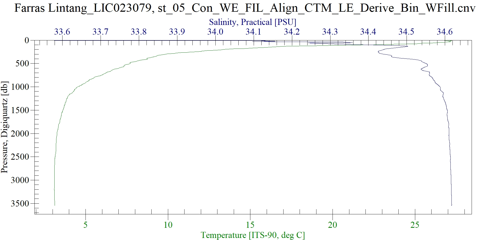

Acara 1: Align Data CTD Menggunakan SBE Data Processing

Visualisasi Data CTD Menggunakan SBE Data Processing
Berdasarkan hasil praktikum yang telah dilakukan, menghasilkan grafik antara kedalaman dan suhu yang dimana semakin dalam suatu perairan maka suhu akan semakin rendah. Pada grafik menunjukan suhu pada permukaan adalah 27°C. Sedangkan pada kedalaman antara 400-1500m mengalami penurunan suhu yang dratis yaitu dari 15°C menjadi 4°C.
Acara 2: Bin Average CTD Menggunakan SBE Data Processing
Sebelum Denoising
Setelah Denoising
Berdasarkan hasil praktikum yang telah dilakukan, menghasilkan grafik antara kedalaman, suhu, dan salinitas pada sebuah perairan yang dimana semakin dalam suatu perairan maka suhu akan semakin rendah sebaliknya salinitas akan semakin meningkat. Grafik menunjukkan pada kedalaman 200m memiliki salitinitas berkisar 34,24 PSU dengan temperatur sekitar 26° C. Salinitas dan suhu mengalami penurunan suhu yang dratis pada kedalaman antara 400-1500m yaitu dari 15°C menjadi 4°C dan 34,42-34,6 PSU untuk salinitas. Pada kedalaman selanjutnya konstan dengan suhu 3° C dan salinitas 34,6 PSU.
Acara 3: Visualisasi Data CTD Menggunakan SBE Data Processing, Microsoft Excel. dan ODV

Diagram T-S di Perairan Maluku
Hasil diagram T-S di Perairan Maluku pada 5 September 2022 seperti pada Gambar 1 di atas. Pada diagram menggambarkan bahwa suhu dan salinitas berbanding lurus sedangkan terhadap densitas berbanding terbalik. Data menunjukkan pada lapisan permukaan (mixed layers) memiliki nilai densitas kisaran 22,5-23, nilai suhu kisaran 25-30 ℃, dan salinitas kisaran 34,80 - 34,95 PSU, pada lapisan termoklin memiliki nilai densitas kisaran 23-26, nilai suhu kisaran 13-25 ℃, dan salinitas kisaran 34,60 - 34,80 PSU, dan pada lapisan dalam (deep layers) memiliki nilai densitas kisaran 26 - 27,25, nilai suhu kisaran 5 - 13 ℃, dan salinitas kisaran 34,58-34,60 PSU.
Acara 4: Visualisasi Data Nutrien Terhadap Suhu, Salinitas, dan Oksigen
Hubungan nitrat Terhadap Suhu
Hasil dari pengolahan data pada praktikum ini menunjukkan bahwa suhu berbanding terbalik dengan kadar nitrat di dalam perairan, semakin dalam perairan maka suhu akan semakin rendah sedangkan kadar nitrat akansemakin tinggi. Pada hasil praktikum ini dapat dilihat bahwa rentang suhu dan kadar nitrat pada kedalaman 0-6000 m adalah 0-15 ℃ dan 15-30 mg/L.
Hubungan nitrat Terhadap Salinitas
Hasil dari pengolahan data pada praktikum ini menunjukkan bahwa salinitas berbanding terbalik dengan kadar nitrat di dalam perairan, semakin dalam perairan maka salinitas akan semakin rendah sedangkan kadar nitrat akan semakin tinggi. Pada hasil praktikum ini dapat dilihat bahwa rentang suhu dan kadar nitrat pada kedalaman 0-6000 m adalah 34.6-35.2 PSU dan 15-30 mg/L.
Hubungan nitrat Terhadap Oksigen Terlarut
Hasil dari pengolahan data pada praktikum ini menunjukkan hubungan nitrat terhadap oksigen terlarut. Kadar oksigen terlarut pada kedalaman 0-1500 m menunjukkan grafik yang semakin menurun yaitu dari 212 mg/L turun sampai 120 mg/L, sedangkan pada kedalaman 1500-3500 m kadar oksigen terlarut kembali meningkat yaitu dari 120-160 mg/L. Kadar nitrat pada kedalaman 0-6000 m menunjukkan grafik yang semakin meningkat yaitu dari 15-30 mg/L.
Acara 5: Visualisasi Diagram T-S

Diagram T-S
Hasil pengolahan diagram T-S dapat dilihat pada Gambar di atas, memiliki kadar salinitas dengan rentang antara 34,1 – 35,2 ppt dengan suhu antara 0 – 30 ℃, dan kadar densitasnya berkisar dari 22 - 28 kg/m3 . Stasiun 1 yaitu dengan warna merah, pada permukaan dengan kedalaman 0 – 152 mmemiliki suhu antara 22,2 – 26,4 ℃, dengan kadar salinitas antara 34,8 – 35 ppt, dan densitas antara 22 – 24 kg/m3 . Di kedalaman 152 – 600 m memiliki suhu antara 6,4 – 22,2 ℃, dengan kadar salinitas antara 34,1 – 35 ppt, dan densitas antara 24 – 27 kg/m3 . Di kedalaman 600 – 5700 m memiliki suhu antara 1,5 -6,4 ℃, dengan kadar salinitas antara 34,1 – 34,7 ppt, dan densitas antara 27 - 28 kg/m3 .
Stasiun 2 yaitu dengan warna biru, pada permukaan dengan kedalaman 0 – 152 m memiliki suhu antara 22,4 – 28,2 ℃, dengan kadar salinitas antara 34,6 – 35,2 ppt, dan densitas antara 22 – 24 kg/m3 . Di kedalaman 152 – 600 m memiliki suhu antara 6,4 – 22,4 ℃, dengan kadar salinitas antara 34,1 – 35,2 ppt, dan densitas antara 24 – 27 kg/m3. Di kedalaman 600 – 5700 m memiliki suhu antara 1,5 - 6,4 ℃, dengan kadar salinitas antara 34,1 – 34,7 ppt, dan densitas antara 27 - 28 kg/m3 . Hasil dari kedua stasiun ini tidak terlalu berbeda, hal dapat dipengaruhi karena letaknya yang berdekatan.
Acara 6: Diagram T-S Terhadap Nitrat, Fosfat, dan Oksigen

Diagram T-S Terhadap Fosfat di Samudra Pasifik
Berdasarkan hasil praktikum yang telah dilaksanakan, hubungan diagram T-S terhadap fosfat menunjukan grafik seperti pada Gambar 3 di atas. Pada suhu 25 - 30 ℃ , salinitas 33,2 – 35 ppt, dan densitas 21 – 22 kg/m³ terlihat kandungan oksigen di Perairan Samudra Pasifik memiliki nilai antara 0 – 0,1 mg/L atau memiliki kadar fosfat terendah. Pada suhu 10 – 25 ℃, salinitas 34,2 - 35 ppt, dan densitas 22 – 26 kg/m³ memiliki nilai kandungan fosfat antara 0,1 – 2 mg/L. Pada lapisan dalam yaitu pada suhu 0 – 10 ℃, salinitas 34,2 – 34,7 ppt, dan densitas 26 – 28 kg/m³ memiliki nilai kandungan oksigen antara 2 – 3 mg/L atau memiliki kadar fosfat tertinggi.

Diagram T-S Terhadap Oksigen di Samudra Pasifik
Berdasarkan hasil praktikum yang telah dilaksanakan, hubungan diagram T-S terhadap oksigen menunjukan grafik seperti pada Gambar 2 di atas. Pada suhu 25 - 30 ℃ , salinitas 33,2 – 35 ppt, dan densitas 21 – 22 kg/m³ terlihat kandungan oksigen di Perairan Samudra Pasifik memiliki nilai antara 200 – 250 ppm atau memiliki kadar oksigen tertinggi. Pada suhu 10 – 25 ℃, salinitas 34,2 - 35 ppt, dan densitas 22 – 26 kg/m³ memiliki nilai kandungan oksigen antara 100 – 200 ppm. Pada lapisan dalam yaitu pada suhu 0 – 10 ℃, salinitas 34,2 – 34,7 ppt, dan densitas 26 – 28 kg/m³ memiliki nilai kandungan oksigen antara 50 – 100 ppm atau memiliki kadar oksigen terendah.